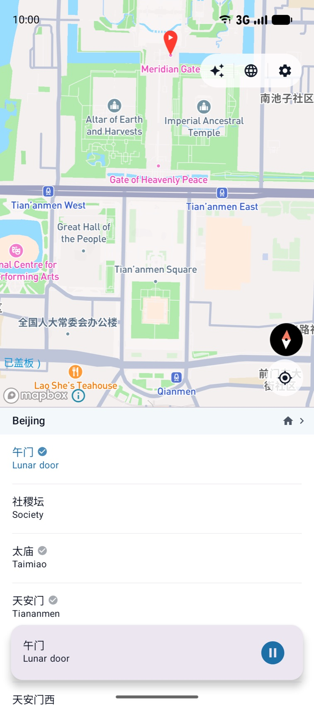

Guía de Audio con IA para China
Cada Lugar en China


Cada Lugar en China
Tiene una Historia.
ChinaWalk es la app hermana de CityYoYo, creada para viajeros que exploran China. Toca cualquier lugar —un monumento, un hutong, una casa de té— y escucha una historia narrada por IA en tu idioma. Sin VPN. Sin lista curada. Sin guía de viaje necesaria.
🔓 Funciona en China sin VPN
Gratis · iOS & Android · English, 中文, 한국어, Español, Português, Français
